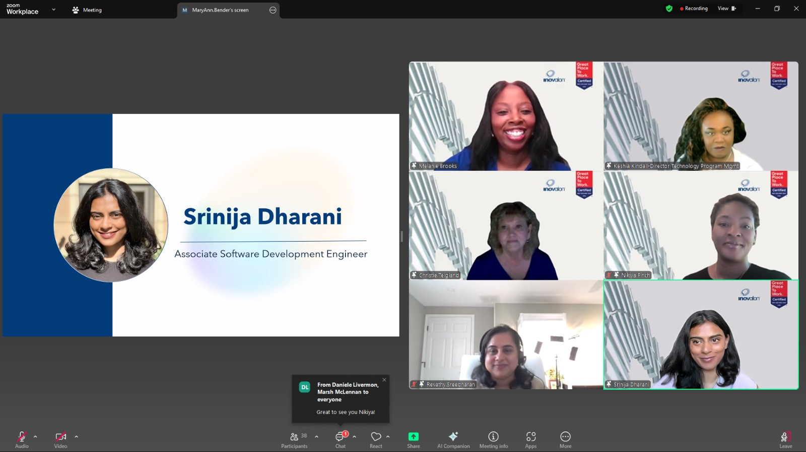
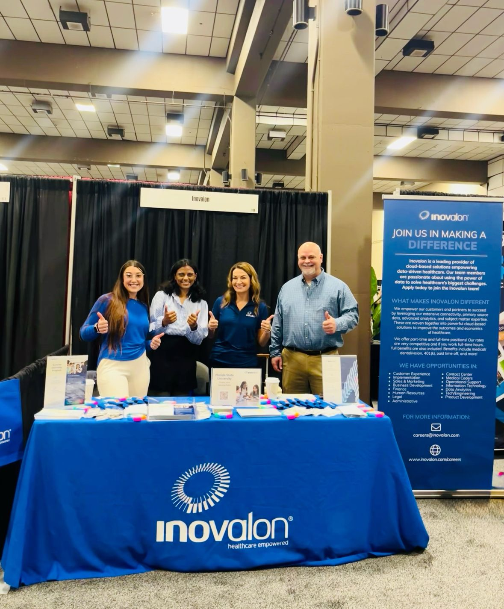
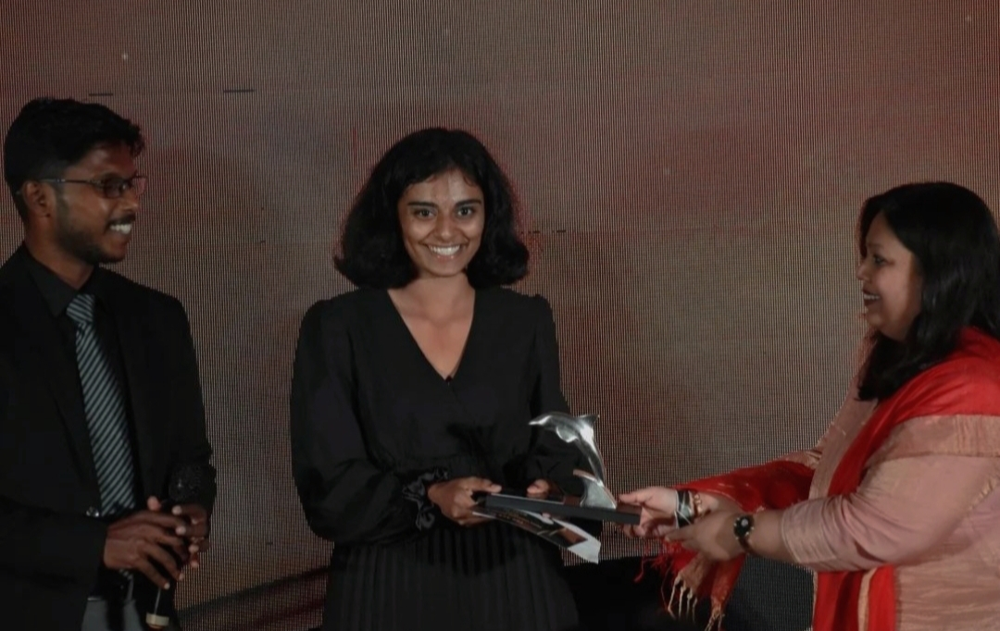

Not your usual AIML enthusiast - I build useful things.
I grew up in a family of doctors, and for a long time, I thought I’d follow the same path. Everything changed in eighth grade when I saw my sister typing away on her laptop. She introduced me to math and programming, and I was instantly hooked. I knew right then that spending my days building technical solutions to real problems was what I wanted to do. I had found my calling.
I come from a place where many people haven’t seen the spectacle that is technology. Realizing how much it could shape the future, I wanted to help others see its impact. Back in high school, as part of the Interact Club (a Rotary-sponsored service club), I worked on projects that encouraged my classmates and community to explore how technology could make everyday life easier and more connected.
That curiosity never left me. Over time, my love for math evolved into a passion for machine learning, software development, and cloud technologies. Today, I’m focused on building solutions that are not only technically strong but also human-centered.
And if I weren’t doing this, you’d probably find me running a cozy little coffee-and-book shop!
Duration: Jun 2025 – Present
Remote, United States of America

Spoke at a panel for Women in Technology with my colleagues at Inovalon.
Duration: Aug 2024 – May 2025
Tallahassee, FL, United States of America
Duration: Jun 2024 – Aug 2024
Remote, United States of America

Represented Inovalon at FSU Career Fair.
Duration: May 2022 – Aug 2022 (Remote)
Duration: Oct 2021 – Jul 2023
Duration: Dec 2021 – Apr 2023
Recognized for outstanding academic performance in Computer Science, graduating with a CGPA of 9.4.
Honored for exceptional balance of leadership, academics, and community engagement throughout the academic year.

Awarded for demonstrating initiative, teamwork, and consistent impact in leading the GitHub GITAM community.
Demonstrated up to 70% higher V-measure compared to baseline methods by integrating SNV and CNA signals for single-cell clustering across 8 simulated and 1 real dataset.
View on BioRxivExtracted actionable insights from DevGPT data, driving data-informed improvements and strategic decision-making.
Skills: Python, Data Cleaning, Analysis, Visualization, Research and Development
View on GitHubImplemented the MDUAL algorithm, achieving a 92.3% increase in effectiveness over traditional outlier detection methods.
Skills: Java, Anomaly Detection
View on GitHubPlayed the classic t-rex runner game using just your palm
Skills: Python, OpenCV, Image Processing, Object Detection, PyAutoGUI, YOLOv4
View on GitHubRead my article on Analytics India Magazine, where I share my experience of using AI techniques to control the Chrome Dino game with just a palm gesture.
Read Article